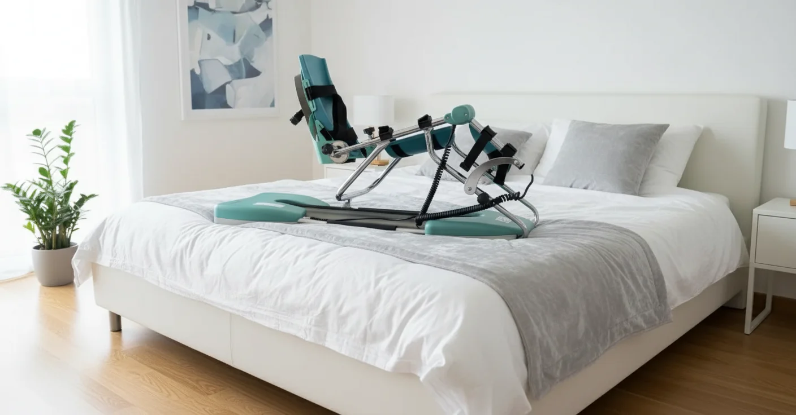

Het Hoffa-vetkussen is een klein, maar erg gevoelig stukje vetweefsel net onder uw knieschijf. Raakt het geïrriteerd of beklemd, dan spreekt men van het Hoffa-syndroom: pijn onder en naast de knieschijf, vooral bij het volledig strekken van de knie. Helpen rust, oefeningen en kinesitherapie niet voldoende, dan kan de orthopedist via een kijkoperatie een deel van het vetkussen verwijderen. Na die ingreep is het belangrijk dat de knie snel en zacht blijft bewegen, want het vetkussen vormt gemakkelijk littekenweefsel. Daarom adviseren sommige chirurgen een kinetec voor thuis. In dit artikel leest u wat de operatie inhoudt, waarom de kinetec helpt, hoe een voorbeeldschema in graden eruitziet en hoe u de knie de eerste weken best verzorgt.
Kort samengevat
Na een artroscopische ingreep aan het Hoffa-vetkussen start de kinetec vaak al de dag na de operatie. U werkt naar een volledige strekking en bouwt de buiging op tot ongeveer 120° in twee tot vier weken. Rustig en regelmatig bewegen beperkt zwelling en voorkomt dat het vetkussen verlittekent en uw knie stijf wordt.
Wat is het Hoffa-vetkussen?
Het Hoffa-vetkussen (ook infrapatellair vetlichaam genoemd) ligt achter de kniepees, tussen de onderkant van de knieschijf en het scheenbeen. Het werkt als een schokdemper en vult de ruimte op wanneer u de knie buigt en strekt. Het vetkussen bevat veel zenuwuiteinden en bloedvaatjes. Dat verklaart waarom een geïrriteerd vetkussen zo pijnlijk kan zijn en waarom het na een operatie snel dik wordt.
Bij het Hoffa-syndroom wordt het vetkussen telkens geklemd tussen de knieschijf en het dijbeen. Typische klachten zijn:
- Pijn onder de knieschijf, links en rechts van de kniepees
- Meer pijn bij het volledig strekken of overstrekken van de knie, bijvoorbeeld bij lang rechtstaan
- Een zachte zwelling naast de kniepees
- Pijn bij trappen aflopen, springen of na lang stilzitten
Het Hoffa-syndroom ontstaat vaak na een val op de knie, bij sporters die veel springen of bij mensen met soepele knieën die makkelijk overstrekken. Soms speelt het na een eerdere knieoperatie, zoals een kruisbandoperatie, waarbij het vetkussen verlittekend en verhard is. Pijn vooraan in de knie kan ook andere oorzaken hebben; lees bijvoorbeeld ons artikel over knieschijfpijn (patellofemoraal pijnsyndroom).
De Operatie: Wat Gebeurt er?
De meeste patiënten met een Hoffa-syndroom herstellen zonder operatie, met aangepaste oefeningen, taping en het vermijden van overstrekken. Een ingreep wordt pas overwogen als de klachten maanden blijven duren. De chirurg werkt dan via een kijkoperatie (artroscopie): via twee of drie kleine sneetjes verwijdert hij of zij het ontstoken, verdikte of verlittekende deel van het vetkussen. Vaak wordt in dezelfde ingreep de rest van de knie nagekeken. Meer algemene uitleg over zo'n ingreep vindt u in ons artikel over de kinetec na een knie-artroscopie.
Meestal mag u na de operatie meteen steunen op het geopereerde been, met krukken als hulp de eerste dagen. Het herstel lijkt dus eenvoudig. Toch is er één belangrijk aandachtspunt: het weggenomen gebied geneest met nieuw bindweefsel. Ligt de knie de eerste weken te veel stil, dan kan dat bindweefsel uitgroeien tot een harde littekenplaat die de knieschijf en de kniepees vastzet. Het gevolg is een knie die niet meer volledig strekt of buigt, het zogenaamde stijve knie of artrofibrose.
Waarom de Kinetec Helpt na een Hoffa-ingreep
Een kinetec of CPM-machine (Continuous Passive Motion) buigt en strekt uw knie traag en gelijkmatig, zonder dat u zelf uw spieren hoeft aan te spannen. Na een ingreep aan het Hoffa-vetkussen heeft dat enkele duidelijke voordelen:
- Minder littekenweefsel: het genezende weefsel wordt telkens zacht gerekt en geplooid, waardoor het soepel blijft in plaats van te verharden.
- De knieschijf blijft glijden: door het buigen en strekken beweegt de knieschijf mee, wat verklevingen rond de kniepees tegengaat.
- Minder zwelling: de pompwerking van de beweging voert vocht af. Meer tips leest u in ons artikel over knie zwelling na een operatie verminderen.
- Minder pijn bij bewegen: een voorspelbare, passieve beweging voelt rustiger aan dan de knie zelf buigen terwijl die nog gevoelig is.
De kinetec vervangt de actieve oefeningen niet. Hij geeft u vooral in de eerste weken een duw in de rug, op de momenten dat zelf oefenen nog moeizaam gaat.

Voorbeeldschema na een Hoffa-ingreep
Het schema hieronder is een voorbeeld voor een vlot verlopend herstel. Uw chirurg of kinesitherapeut bepaalt wanneer u start, hoe ver u mag gaan en hoe snel u opbouwt. Hun advies heeft altijd voorrang. Omdat het vetkussen bij een gewone artroscopie geen hechting van pezen of banden vraagt, verloopt de opbouw meestal sneller dan na bijvoorbeeld een meniscushechting.
30 min
als zwelling meevalt
30–45 min
fietsen en oefeningen
Begin elke sessie een paar graden onder het bereik van de vorige keer en verhoog pas na enkele rustige cycli. Laat de snelheid laag staan. Bijzonder belangrijk na een Hoffa-ingreep is de strekking: zet het minimum vanaf de start op 0° als uw chirurg dat toelaat. Forceer geen overstrekking; volledig recht is het doel. Hoe u de graden instelt, leest u in onze handleiding voor het instellen van de kinetec en in ons artikel over de knie volledig strekken met de kinetec.
| Wat u merkt | Wat het meestal betekent | Wat u doet |
|---|---|---|
| Trekkend gevoel onder de knieschijf tijdens het buigen, weg na de sessie | Normale rek op het genezende weefsel | Doorgaan, graden behouden of licht verhogen |
| Prikkende pijn vooraan bij de laatste graden strekken | Gevoelig vetkussen dat nog geklemd wordt | Snelheid verlagen, koelen na de sessie, melden aan uw kinesitherapeut |
| Knie dikker en warmer de volgende ochtend | Te snel opgebouwd | 5 tot 10° terug, koelen en hoogleggen |
| Buiging blijft na twee weken steken onder 90° | Risico op verklevingen | Contact opnemen met uw chirurg of kinesitherapeut |
Pijn en Zwelling de Eerste Weken
Omdat het vetkussen zo rijk is aan zenuwen en bloedvaatjes, kan de knie na de ingreep gevoeliger zijn dan u bij een “kleine kijkoperatie” zou verwachten. Enkele tips:
- Neem uw pijnstilling op tijd, ongeveer een half uur voor de sessie. Lees ook ons artikel over pijnstillers en de kinetec.
- Koel de knie na elke sessie met een coldpack in een handdoek, tien tot vijftien minuten.
- Leg het been hoog tussen de sessies, maar leg geen kussen onder de knie: dat houdt de knie gebogen en maakt het strekken moeilijker.
- Train uw dijspier met eenvoudige spanningsoefeningen in bed; zie quadriceps-activatie na een knieoperatie.
- Bescherm de wondjes en houd ze droog tot de hechtingen verwijderd zijn; meer in ons artikel over wondzorg bij de kinetec.
Neem contact op met uw arts bij:
- Koorts boven 38°C of een wondje dat rood wordt en vocht afgeeft
- Een knie die snel heel dik en gespannen wordt
- Pijn, zwelling en warmte in de kuit, wat op een trombose kan wijzen
Na de Kinetec: Verder Herstellen
Zodra u vlot boven 110° buigt en volledig strekt, kunt u de kinetec meestal afbouwen. Het herstel gaat dan verder met actieve oefeningen:
- Week 2 tot 4: fietsen zonder weerstand, bijvoorbeeld op een hometrainer, en wandelen zonder krukken
- Week 4 tot 8: kracht van de dij- en heupspieren opbouwen, trappen lopen en evenwicht
- Vanaf maand 3: geleidelijk terug naar lopen, springen en sporten, zonder de knie te overstrekken
Meet uw buiging regelmatig, zodat u en uw kinesitherapeut de vooruitgang zien. Hoe u dat thuis doet, leest u in ons artikel over kniebuiging meten thuis. Twijfelt u wanneer u mag stoppen, lees dan hoe lang u een kinetec huurt.
Kinetec Huren bij PhysioVisit
Bij PhysioVisit huurt u een professionele kinetec CPM-machine voor €17 per dag. We leveren en installeren het toestel overal in België, stellen het in volgens het advies van uw chirurg en tonen u hoe u het veilig gebruikt. Na een kijkoperatie gaat u vaak nog dezelfde dag of de dag erna naar huis, dus plant u de levering best vooraf.
Woont u in de regio Grimbergen, Strombeek-Bever, Humbeek, Beigem of Koningslo? Dan begeleidt onze kinesitherapeut u ook thuis via kinesitherapie aan huis. Voor de fase na de kinetec kunt u bij ons een hometrainer huren voor €2 per dag.
Over de terugbetaling
De terugbetaling van een kinetec verloopt via uw verzekering, niet via de mutualiteit. Wij bezorgen u een factuur die u bij uw verzekeraar indient. Sommige polissen betalen alles terug, andere de helft of een beperkt bedrag. Vraag dit altijd na bij uw eigen verzekering. Meer uitleg vindt u in ons artikel over de kinetec terugbetaling in België.
Veelgestelde Vragen over de Kinetec na een Hoffa-ingreep
Kinetec Nodig na uw Kijkoperatie?
Wij leveren en installeren uw kinetec aan huis in heel België en stellen het toestel in volgens het advies van uw chirurg. Vanaf €17/dag.
Conclusie
Een operatie aan het Hoffa-vetkussen is een kleine kijkoperatie, maar het herstel vraagt aandacht. Het vetkussen zwelt snel op en vormt gemakkelijk littekenweefsel, waardoor de knie stijf kan worden. Door de knie de eerste weken regelmatig en zacht te laten bewegen met de kinetec, werkt u aan een volledige strekking en een soepele buiging. Bouw rustig op, koel na elke sessie en stap tijdig over op actieve oefeningen.
Wilt u een kinetec laten klaarzetten voor uw thuiskomst, of twijfelt u of het toestel in uw situatie zinvol is? Neem gerust contact met ons op. Lees ook hoe u verklevingen in de knie na een operatie voorkomt.